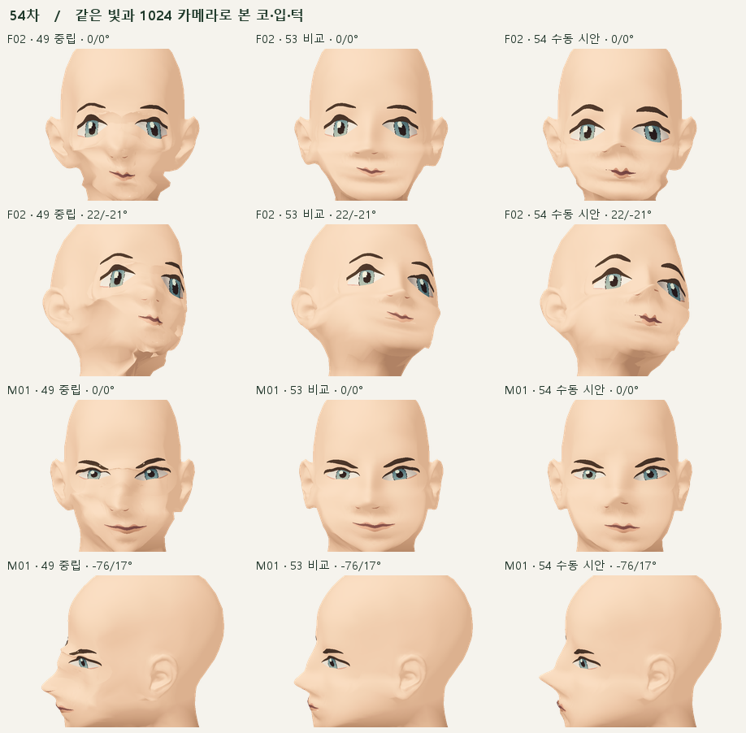
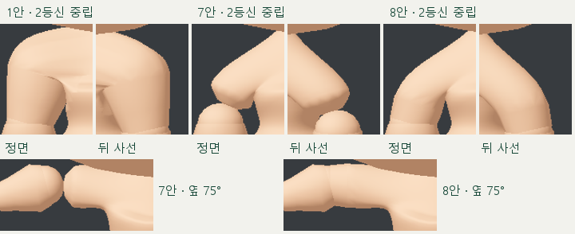
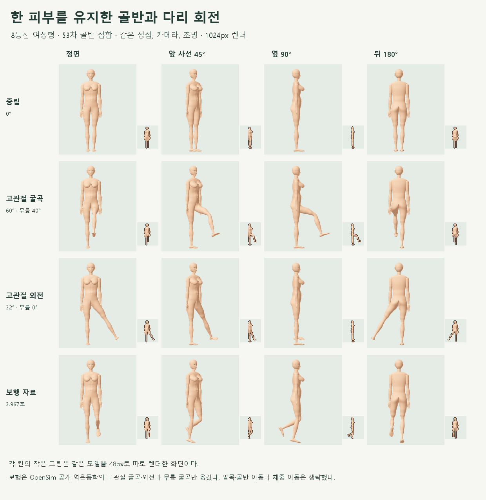
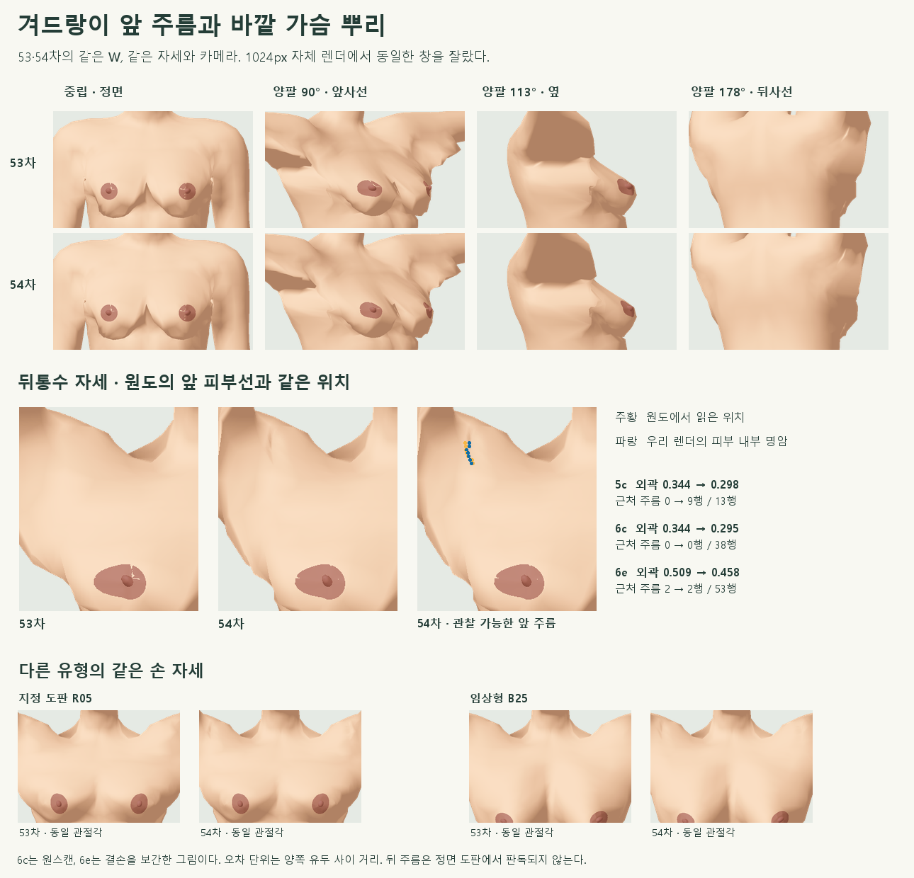

되찾은 턱선과 다시 벌어진 입선
페른의 턱을 아래쪽에서 볼 때와 힘멜이 고개를 숙일 때, 53차에서 부풀었던 아래턱을 줄였다. 이전 반례의 턱선 오차는 페른이 17.952→6.140px, 힘멜이 12.839→11.119px였다. 이번 조형에 쓰지 않은 28화의 페른과 3화의 힘멜에서도 턱은 기존 중립보다 원화에 가까웠다. 반면 48px에서 원화의 입선과 비교하면 페른은 0.742→1.081px, 힘멜은 0.586→0.676px로 멀어졌다. 두 얼굴은 수동으로 맞대볼 수 있다.

팔을 움직일 때 옆가슴에 붙는 겨드랑이 주름
성인 W와 15개 형태에서 팔을 올려 원도에 보이는 앞겨드랑이 주름과 모델의 같은 위치를 비교했다. 이전 관찰창의 일부 유형은 ‘머리 뒤에 손’을 선택해도 중립에 머물렀다. 54차에서는 비교 기준인 53차 형상도 같은 팔·팔꿈치·손목 자세에 놓을 수 있다. ‘부위’에서 ‘53차 형상 · 같은 자세’와 ‘54차 겨드랑이 주름’을 번갈아 선택한다. 포즈가 같아야 가슴의 부피 변화와 피부선 변화가 어느 쪽에서 생겼는지 보인다.
전신에서 팔을 올리고 다리를 굽히기
전신 14개에서 한쪽 또는 양쪽 어깨, 팔꿈치, 골반과 무릎을 조절한다. 한 시점을 고정한 뒤 같은 몸을 돌리면 팔을 머리 위에 뒀을 때 목에서 어깨까지 이어지는 외곽과 겨드랑이 아래를 동시에 볼 수 있다. 앞 90°에서 성인 겨드랑이 안쪽의 단차가 남아 이 동작은 계속 검토한다.


같은 자세에서 53차와 54차를 판별하는 법
성인 W를 열어 팔을 든 뒤 앞겨드랑이에서 옆가슴으로 내려오는 주름을 따라간다. Tong 도판 5c에서 원도 주름 가까이 대응한 행은 13행 중 0행에서 9행으로 늘었다. 새로 대응한 9행의 평균 위치 오차는 양쪽 유두 사이 거리를 1로 두었을 때 0.0198이었다. 별도로 확인한 6c에서는 바깥 윤곽 차이가 줄었지만 안쪽 주름은 38행 모두 대응하지 않았다. W에서 팔을 178°까지 올리면 앞면 국소 굽힘의 95백분위가 69.61°에서 77.02°로 커져 선이 더 날카로워졌다. 이 두 조건을 다음 교정의 반례로 보존했다.

전신에서는 ‘외형 조합’에서 얼굴을 교체하고, 관절 탭에서 한 팔을 앞으로 90° 올려 뒤쪽 사선까지 천천히 돌린다. 14개 기본형과 체형 양끝을 합친 42개 조합 중 18개만 겨드랑이의 날카로운 꺾임 검사를 통과했다. 같은 조합의 옆 140° 자세는 42개 모두 통과했다. 팔이 높이 올라간 모습 하나만 보면 놓치는 차이다.
이번 회차에서 시간을 쓴 곳
얼굴·성인 가슴의 직접 조형에 30%, 어깨와 골반의 관절·피부 연결에 70%를 배정했다. 얼굴에서는 입술 지지면과 아래턱, 가슴에서는 겨드랑이에서 옆가슴으로 내려오는 피부를 고쳤다. 관절에서는 53차의 몸통·골반에 팔을 연결해 같은 몸과 자세에서 비교했다. 얼굴 직접 조형의 기록 구간은 20분 2초였다. 가슴의 직접 조형·검수는 담당자 장부에서 약 19분으로 추산했다. 관절의 전 구간을 같은 방식으로 계측하지 못해 회차 전체의 실제 시간 비율은 미측정이다. 웹 배포 대기 시간은 제작 시간에 포함하지 않았다.